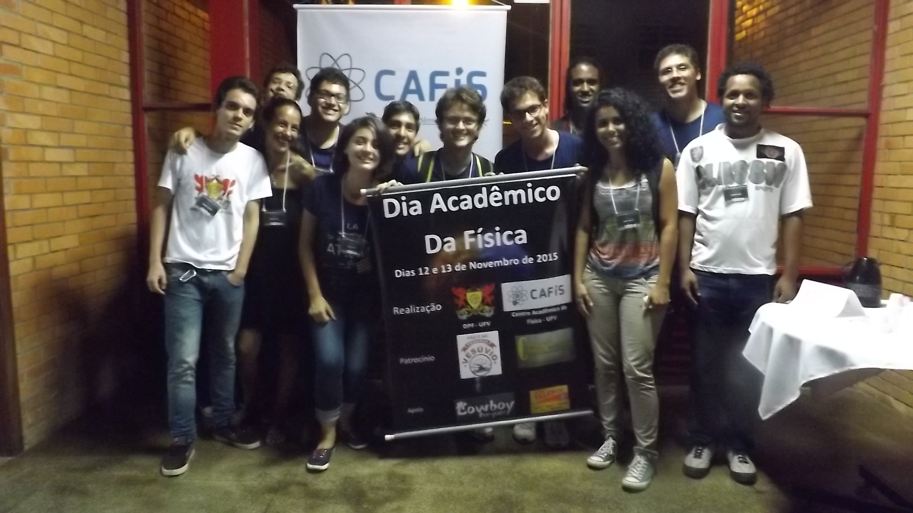
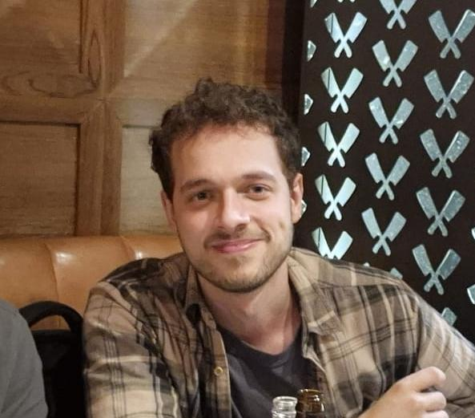

Quem somos?
O que é o CAFís?
O Centro Acadêmico do Curso de Física da UFV é uma associação formada por alunos, que tem por objetivo representar os estudantes de Bacharelado em Física, Licenciatura em Física e Engenharia Física e defender os interesses destes. Foi reativado em 2015 objetivando uma maior participação nas atividades desenvolvidas pelo Departamento de Física (DPF). O CAFís é composto por alunos da graduação em Bacharelado em Física, Licenciatura em Física e Engenharia Física. Anualmente há um processo de eleição, em que grupos de alunos concorrem para compor o CAFís.
O que o CAFís já fez?
O CAFís já realizou inúmeras atividades, sejam acadêmicas ou de integração. Entre estas atividades, podemos citar a Semana Acadêmica de Física, que reúne professores e alunos em um ciclo de palestras, debates e minicursos. Além disso, realizamos diversos eventos objetivando uma integração entre alunos e professores. Também promovemos Assembleias para discutir assuntos relevantes à comunidade acadêmica.
Como posso contribuir?
Você pode demonstrar interesse em participar da gestão atual contatando os seus membros e a sua entrada será votada em Assembleia Geral. Ou, durante o processo eleitoral, você pode se juntar com pessoas interessadas e formar uma chapa. Além disso, estudantes podem contribuir com sugestões e ideias para melhorar a experiência dos alunos no curso e participando do eventos promovidos.
História

O ano de 2015 marcou o retorno das atividades do Centro Acadêmico de Física após um período de inatividade que, infelizmente, não sabemos nem quanto tempo durou. Com um empurrão do professor Orlando e com a vontade de fazer a diferença, o corpo estudantil iniciou um novo capítulo para o CAFís. Um grande marco desse retorno foi a realização do Dia Acadêmico da Física, que futuramente iria se tornar a Semana Acadêmica de Física. O evento foi um sucesso, e a partir dele, o CAFís começou a se consolidar como uma entidade representativa dos estudantes do curso.
Desde o Dia Acadêmico muita coisa mudou, de lá para cá aconteceram 7 Semanas Acadêmicas, eventos de integração e atividades que fortaleceram a comunidade estudantil, eventos de apoio acadêmico para calouros, além da presença política do CAFís e de seus representados em todas as instâncias da universidade.
Agora, em 2026, após 11 anos de contribuição para a comunidade estudantil, o CAFís retorna a seu principal evento para celebrar essa trajetória de alegrias, tristezas, aprendizados e muita luta. Celebraremos essa trajetória discutindo a Física e seu papel nas diferentes áreas do conhecimento, entendendo que a Física é a ciência mãe, capaz de dialogar com outras áreas para compreender o mundo e seus fenômenos.
— Henrique Mota (Presidente do CAFís 2015-2017)
Certa vez, ouvi de uma colega que parte da graça de se viver era, ao atravessar um lugar, mudar ao menos uma pedra de posição. A frase me marcou bastante.
Na minha memória, o ano de 2014 foi bem difícil. Era meu primeiro ano de faculdade e eu sentia dificuldade em praticamente todas as matérias - nunca fui nenhum gênio, mas sempre tive boas notas na escola - ter ido mal em TODAS P1’s, mesmo estudando cerca de 8 horas por dia, era definitivamente algo novo. Para além de estar longe da família, todo o processo de se fazer novas amizades, de ser relembrado quase diariamente por colegas e professores que eu não era tão bom quanto acreditava, era exaustivo. Me aproximei de algumas pessoas rapidamente (algumas que mantenho contato até hoje, inclusive), mas eu sempre tinha esse sentimento de estar isolado num mar, onde cada um estava em sua própria bolha. Não sabia o que esperar dos próximos 2 ou 3 anos, quem diria dos próximos 5. Não conhecia ninguém que tivesse trilhado um caminho parecido com o meu, e só tinha contato com alguns poucos veteranos que haviam sido calouros no ano anterior. Todo esse mar de incertezas me deixava meio perdido.
No ano de 2015, recebi "meus" calouros diretos - pessoas que definitivamente marcaram minha vida. Eles tinham as mesmas inquietações que eu (e muitos outros), mas diferente dos que antecederam eles, decidiram se movimentar. Ouvi falar de um grupo de astronomia amador e, algumas semanas depois, da possível formação de uma entidade para representar todos os alunos de física. A ideia me interessava. A possibilidade de poder engajar com todos estudantes que eu já conhecia, e com os que eu não conhecia, era muito interessante - imagina se um grupo de pessoas se juntassem para evitar que calouros (e veteranos) não se sentissem tão desamparados num curso que, por si só, já te desampara? Parecia ótimo.
Não só parecia, como foi. Após um pequeno evento de 2 dias, a qual intitulamos DIA ACADÊMICO DA FÍSICA (sim, no singular - mesmo sendo dois!), criamos engajamento que, nos próximos anos, formou algo que realmente impactou a vida de todos aqueles que presenciaram. Não era só sobre organizar a Semana Acadêmica e integração entre alunos e professores, mas era também sobre zelar pelos interesses e demandas de todos os estudantes. Era, de alguma forma, tentar amortecer aquele sentimento de solidão e desespero que muitos de nós sentimos em nossos primeiros dias como universitários.
Fizemos festas na casa de professores, convidamos professores de diferentes partes do Brasil para palestrar, mas principalmente, conseguimos aproximar os estudantes de física - um calouro tinha acesso a estudantes do mestrado no dia a dia. Ocupamos espaços nunca antes ocupados, como cadeira no colegiado e na comissão coordenadora do curso, e fizemos diferença na história do departamento.
Sou muito grato por essa experiência, e sempre fico feliz e cheio de orgulho quando lembro de quantas coisas bacanas fizemos. Esse é um sentimento que encorajo todos a ter.